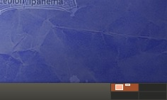
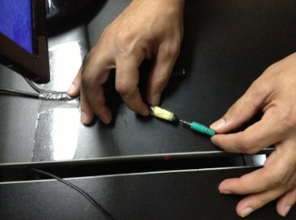

Taxi Pontual
Manuais do Atendimento


Escolha o Procedimento


Utilização dos Ramais
O Que Não Fazer!
- Nunca desligar um computador ou monitor sem antes informar alguém da administração.
- Nunca reiniciar um computador, informar ao responsável pela manutenção dos computadores que esteja trabalhando no dia.
- Plugar e desplugar o Headset segurando pelos plugs, tanto do headset, quanto da mesa.
- Não mexer na configuração de audio, pois sem conhecimento sobre as placas de som, você com certeza irá desconfigurar o audio, desabilitando o som ou o microfone.
- sempre que sentar em uma mesa, verificar se está com mousepad ( tapete ), caso não tenha, cobrar/perguntar ao operador anterior.
- Nunca procurar personalizar o computador da empresa, pois eles são configurados de forma padrão para que todos possam se sentir confortável ao mudar de ramal.
- se tentar abrir o twinkle e der erro perguntando SIM ou NÃO, encerre a sessão e entre novamente e antes de abrir qualquer coisa, abra o twinkle primeiro.
- Nunca mexa nas configurações do twinkle, pois você poderá inutilizar ele para efetuar e receber ligações.
- Nunca mexer nas configurações do Talk para não desconfigurá-lo.
- Qualquer problema que o RAMAL ofereça durante o dia e horário que não sejá de trabalho da Ti* ( manutenção ), escrever em um papel o que o computador está fazendo ou deixou de fazer, descrevendo-o e o coloque na mesa do responsável pela manutenção dos computadores.
Obs: somente poderá ser reiniciado, se o computador travar ou aparecer com a tela dividida em 4 no canto inferior da direita.


Obs: caso não tenha ninguém no ramal, informar ao responsável pelos computadores.
Obs: Lembrando que o computador da empresa, não é de propriedade particular para personalização.